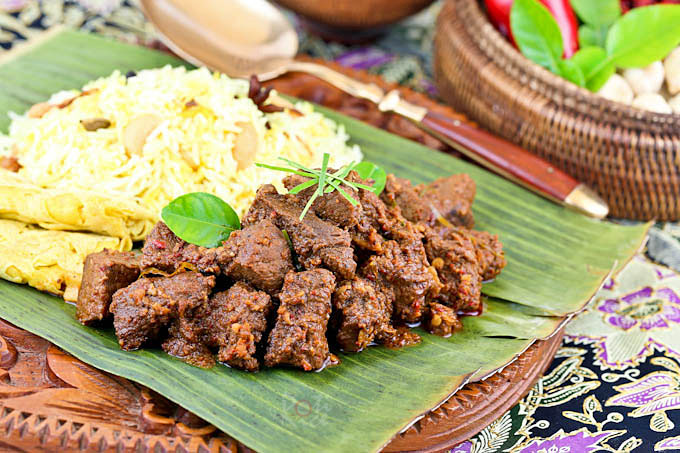

Beef Rendang

Beef Rendang is a very aromatic caramelised beef
curry. Can be found during festive seasons in Malaysia such as
wedding feasts or Hari Raya (Eid al-Fitr).
One important aspect of the rendang curry is Kerisik
which is fried coconut paste.
Ingredients
- 3 tbsp vegetable oil
- lots of spices i cant be bothered typing
- 2 stalks lemongrass
- 6 cloves
- 1/2 cup water
- 3/4 coconut milk
- 1 cup grated coconut
- 1 tbsp sugar
- 1 tsp salt
- 4 kaffir lime leaves
- 1 tumeric leaf
Steps
- Blend all spices and add water. Transfrer to a bowl.
Add ground coriander, cumin, and fennel and mix into
paste
- Heat vegetable oil into medium sized pot. Fry spices
and add paste.
- toast grated coconut in a frying pan until golden
brown. Set aside
- Add sugar, saly, kerisik to taste and all spices. Cook
until meat is tender.
- Serve with Roti Jala nasi
biryani, or ketupat!